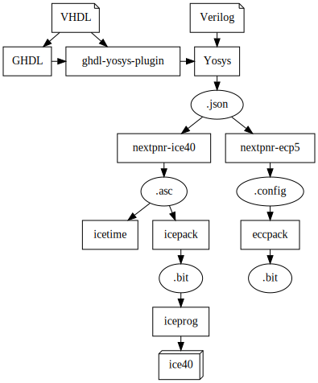

Tools
Tool |
Vendor |
Default device |
Name format |
|---|---|---|---|
Diamond |
Lattice |
LFXP2-5E-5TN144C |
device-speed-package |
ISE |
Xilinx |
XC7K160T-3-FBG484 |
device-speed-package |
Libero |
Microchip/Microsemi |
MPF100T-1-FCG484 |
device-speed-package |
Openflow |
FLOSS |
HX8K-CT256 |
device-package |
Quartus |
Intel/Altera |
10M50SCE144I7G |
part |
Vivado |
AMD/Xilinx |
XC7K160T-3-FBG484 |
device-speed-package |
Diamond
Diamond is the previous generation EDA tool from Lattice.
Example:
from pyfpga.diamond import Diamond
prj = Diamond()
ISE
ISE (Integrated Software Environment) is the previous Xilinx’s EDA, superseded by Vivado. The last version is ISE 14.7, launched in October 2013. It supports devices starting from Spartan 3/Virtex 4 until some of the first members of the 7 series (all the 7 series and above are supported by Vivado). Previous Spartan/Virtex devices were supported until version 10.
Attention
ISE supports Verilog 2001 and VHDL 1993, but not SystemVerilog.
Example:
from pyfpga.ise import Ise
prj = Ise()
Libero
Libero-SoC (Microsemi, acquired by Microchip in 2018) is the evolution of Libero-IDE (Actel, acquired by Microsemi in 2010). PyFPGA supports Libero-SoC starting from 12.0, which supports most modern families. For other devices, Libero-SoC 11.9 or Libero-IDE v9.2 are needed, but these versions are not supported by PyFPGA.
Example:
from pyfpga.libero import Libero
prj = Libero()
Openflow
Openflow is the combination of different Free/Libre and Open Source (FLOSS) tools:
{kind=link}
Yosys for synthesis, with ghdl-yosys-plugin for VHDL support.
nextpnr in its ice40 and ecp5 versions.
Projects icestorm and Trellis.
It relies on Docker and fine-grain containers.
Attention
It is currently the only flow not solved using Tcl (it uses docker in a bash script instead).
Example:
from pyfpga.openflow import Openflow
prj = Openflow()
Quartus
Quartus Prime (Intel) is the continuation of Quartus II (Altera) and is divided into the Pro, Standard, and Lite editions, each supporting different families.
Example:
from pyfpga.quartus import Quartus
prj = Quartus()
Vivado
Vivado is the current EDA tool from Xilinx, which has superseded ISE and supports the 7 series and above. It is included with Vitis, the SDK for embedded applications.
Example:
from pyfpga.vivado import Vivado
prj = Vivado()